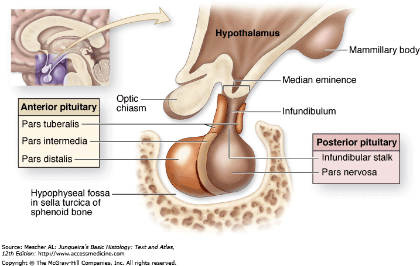

Nonfunctioning pituitary adenoma

SYMPTOMS:
Symptoms vary depending on the size and location of the tumor. They may include:
- Headaches, caused by:
The tumor stretching the covering of the brain, called the meninges.
The center of a large tumor dying, which can cause sudden, intense headaches. -
Vision loss if the tumor presses on the area where nerve fibers carry information from your peripheral (side) vision.
-
Difficulty aiming your eyes in the right direction, caused by the tumor pressing on a nerve in the brain near your eye.
-
Fatigue and weakness.
DIAGNOSIS
- Exam: We begin by doing a physical examination and asking you about your symptoms.
-
Blood tests: Specialized blood tests help us see if the pituitary gland is making too much or too little prolactin, growth hormone (GH), adrenocorticotropic hormone (ACTH) or other hormones. Blood tests can also reveal other problems caused by pituitary changes.
-
Pregnancy test: We may ask women of childbearing age to take a pregnancy test to rule out pregnancy as a source of hormone production.
-
Cosyntropin/ACTH stimulation tests: This test measures ACTH and cortisol levels. We take a blood sample before giving you a dose of ACTH through an IV in your arm. We then take one or more blood samples to measure the rise of cortisol levels in your blood.
-
Imaging: MRI scans can help us see the size and location of a tumor and whether it’s affecting your eyesight. If you’ve already had an MRI, we’ll repeat it only if your first scan doesn’t show enough detail.
-
Neuro-ophthalmologist evaluation: We may recommend that you see a neuro-ophthalmologist, a specialist in vision problems related to the nervous system. The specialist will test your vision to see if the tumor is affecting an optic nerve.
TREATMENT
- Surgery
Our neurosurgeons use a minimally invasive procedure called transsphenoidal surgery to remove the tumor through the nose. This method leaves no visible scarring, avoids delicate structures in the brain and speeds recovery. We use tiny surgical tools with either an endoscope — a lighted scope with a camera — or a microscope to magnify the surgical area.
-
Radiation therapy
If we can’t completely remove the tumor, we will sometimes recommend radiation therapy. This treatment helps shrink the tumor or prevent it from growing.